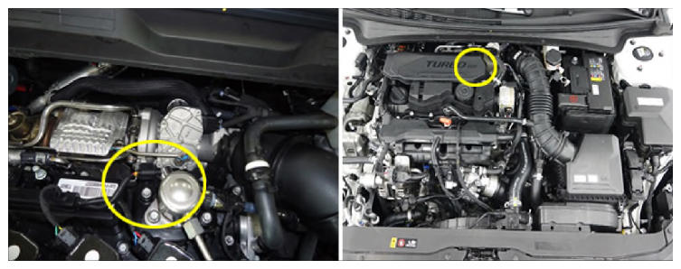

Fuel Rail Pressure Sensor (RPS)
 Courtesy of HYUNDAI MOTOR AMERICA
|
A fuel Rail Pressure Sensor (RPS) is mounted to the fuel rail and it senses fuel rail pressure.
The Gasoline Direct Injection (GDI) engine Electronic Control Unit (ECU) operates a fuel pressure control valve with the signals from the fuel RPS to control optimized RPM and rail pressure.